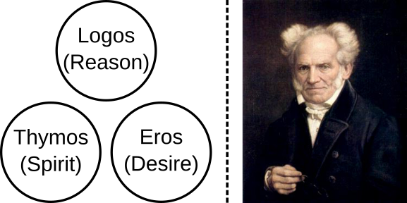
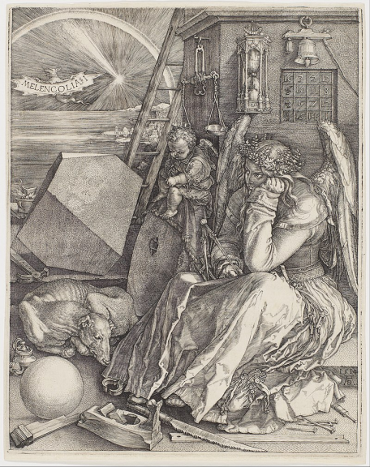

Demanding Less to Understand More
Ever since I can first remember encountering the question, “What is the self?”, I concluded that we are products of biology and chemistry, which in turn arise from physics. This approach is called “materialism,” but I only found out about that terminology much later. At this same time during adolescence and young adulthood, I also found that you will encounter these pesky things known as emotions. Partly from my society and partly from my individuality, it always seemed easiest to write these off, to tell myself they were mere feelings, something passing, a distraction.
I know there are a lot of hypotheses about emotions, feelings, sensation, perception, and so on; I know some of these are highly elaborated, with ardent supports and detractors alike. Like a true scholar, though, I’ll skip over centuries of philosophy and cognitive science to offer my own perspective. While this commentary comes instead from a place of pure experience, which I do not want to hold up as somehow superior, I do think it can carry its own advantages.
Attempting to confront my emotions in earnest has forced me to reconcile that I’m not always in control. There is some part of me that can exert its own influence, pulling my mood and behavior in different directions, despite the best efforts of what I perceive as my main self to resist. This force, for lack of a better word, is not a product of rational thought nor is it subject to reason; it is spontaneous, undulating, and occasionally implacable. I have always thought that any concept of the unconscious, the id, the reptile brain, whatever you want to call it– I have always thought this was all mumbo-jumbo, with no objective or scientific validity. I felt that at best, these terms could provide a practical framework for talk therapy; at worst, they could initiate a scheme to mystify and manipulate. Some recent events have led me to reconsider this absolute evaluation, starting with this quote from the late philosophy professor Michael Sugrue about Sigmund Freud:1
All the biological, positivistic, scientistic readings of Freud are all wrong. Everybody who wants Freud to be a scientist, I just think that’s completely impossible. I think it’s a big misreading. And I think once we get beyond that misreading, we can really begin to appreciate him. So let’s first of all think about the problem of falsifiability. Karl Popper and the whole school of Vienna, Vienna Circle, and the later neo-positivistic kind of thinkers, all have a common set of objections to things like Freudian psychology. They say, how can you test this? Can you falsify it?… I think that the attempt to read this as a kind of scientific activity is just wrong, and it runs into all kinds of problems. For example, do you really analyze dreams in the way you analyze blood? I think it’s a metaphorical sort of analysis… you don’t put it [a dream] into a centrifuge and whirl it around.
When I heard this passage, I had already been listening to Sugrue’s sequence of popular lectures outlining Western philosophy. I liked his communication style and thought he did a great job of explaining difficult topics. So when he made this comment about Freud, it stuck with me– was I really going to trust everything else he said, which I admittedly didn’t know very closely, yet vehemently disagree with him on this point, just because I knew quite a bit about it?
I decided that, no, I should treat this like I treated the many other points he made about the many other thinkers he covered, and approach it openly and with appreciation. Doing so helped open my eyes to something that I had previously missed: Sometimes, you can make a point that’s not scientific, and it’s still valuable.
I’m not going to get into the weeds of Freudian psychoanalysis, with all its defense mechanisms, dream interpretations, and so on. The point I want to make is that Freud isn’t describing brain mechanisms of the self, even if that’s what he explicitly says he is doing. He is providing a representation, a model, that can have utility on an abstract level, even if it’s not a physical, material one.
Freud’s model doesn’t speak to me at all because I have so many problems with it given my research background in neuroscience and nervous systems. If such a formulation works for you, that’s great. Rather than saying it’s wrong, though, I should recognize it for what it is: An attempt to make sense of chaos in our lives. Upon granting this leeway, the application of Freud’s model pivots from something attempting to be analytical and predictive to one that is metaphorical, personal, and ultimately literary in nature. Psychoanalysis, as I understand it now, is about crafting narratives, not diagnoses.

Freud’s system of the ego, id, and superego is not even particularly original. As Sugrue notes, the idea of three souls traces to Plato (left), and the unconscious goes back to at least the German philosopher Arthur Schopenhauer (1788-1860; right).
By taking Sugrue’s words seriously, and lending it the same honesty and respect that I did for the rest of his lectures, I was able to gain a new perspective that has proven helpful for processing my own inner experience, especially once I came across Carl Jung. Unlike Freud, who proposes a model of the mind with some very specific and not-so-subtle dogmatic axioms, Jung’s work takes the opposite approach by attempting unification through balance from recurring patterns across different disciplines. While this is a topic for another essay, I want to mention it here first because I don’t think I would have ever opened up to Jung, for my same reasons for resisting Freud, if I hadn’t given a chance to non-material perspectives in the first place.
Of course, opening this gate can quickly lead to esotericism, the occult, and a bit more. And hey, I’m all for that to some extent– Isaac Newton himself wrote an enormous amount about alchemy as he did for math. Discoveries can find inspiration in weird places.
I now think that asking “What is the self?” is the wrong question, because I don’t think we are ever one, static thing. We are shifting complexes of competing perceptions of ourselves, others, and the environments around us,2 where the dynamics of these relationships coalesce into different selves at different moments. Certainly, we each present an overall consistency that separates us from the rest, yet the point is that in any given instance we are but smaller portraits comprising a grander landscape. Making sense of each day on this planet often starts with waking from a strange dream. Perhaps our wandering minds needn’t stop there, and we should continue to appreciate this vast world in all its depth.

Melancolia I (1514) by Albrecht Dürer. As the title suggests, I like to think that the angel is trying to process her own feeling of melancholy, even though her usual tools aren’t working.3
Your readership is more than enough. Still, if you’d like to buy me a coffee, it’s the clearest signal to keep writing.
Footnotes
This unintentionally parallels the literary narratives I learned about in grade school: person vs. self, person vs. person, person vs. nature.↩︎